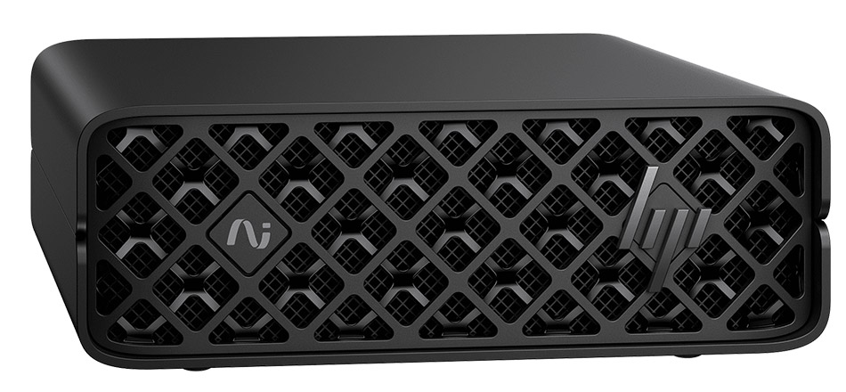
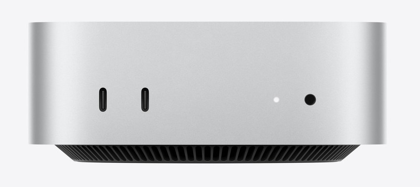
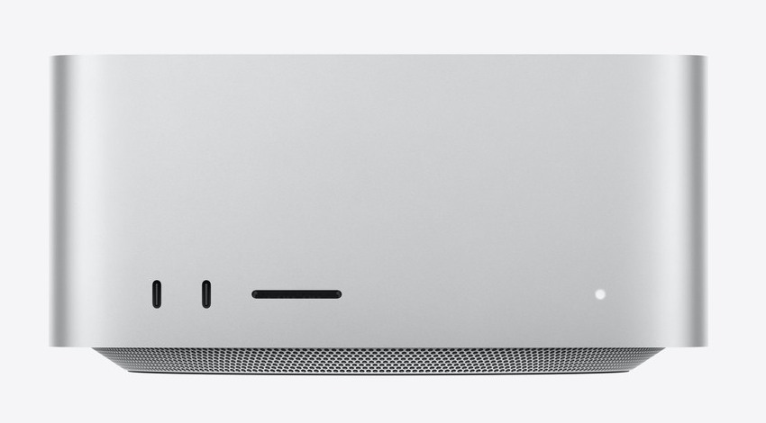
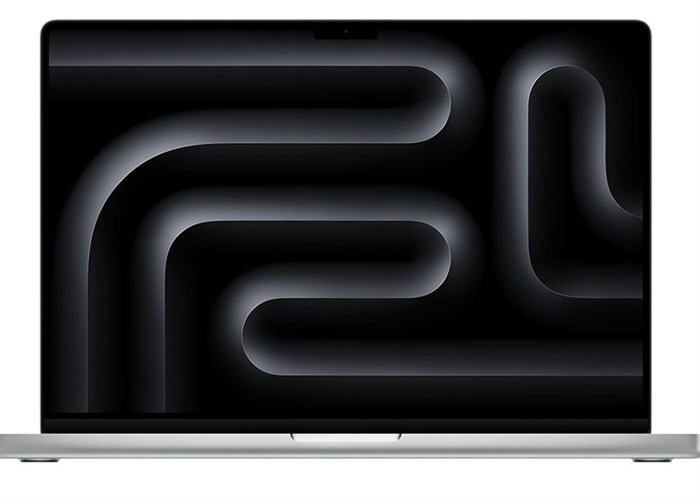
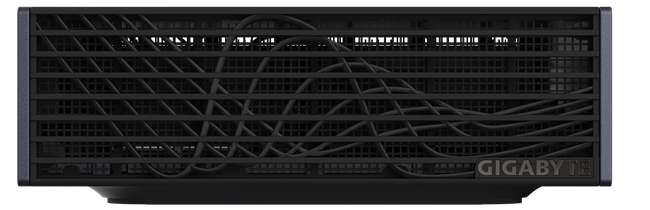
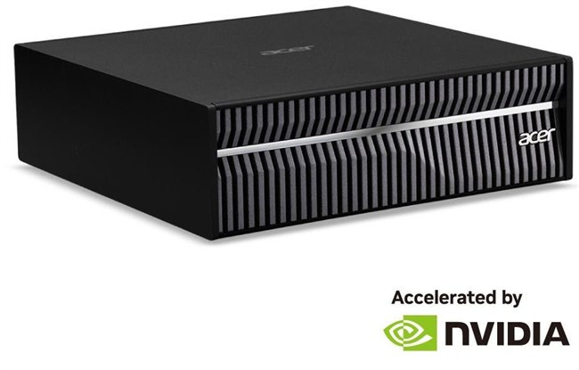
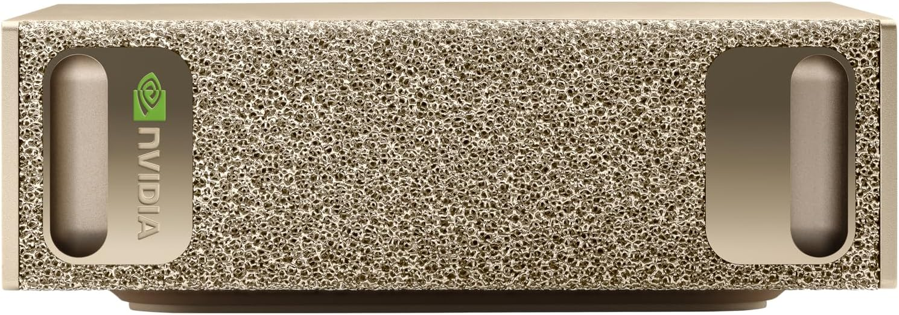
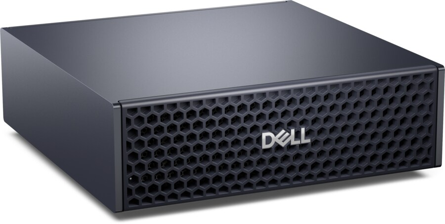
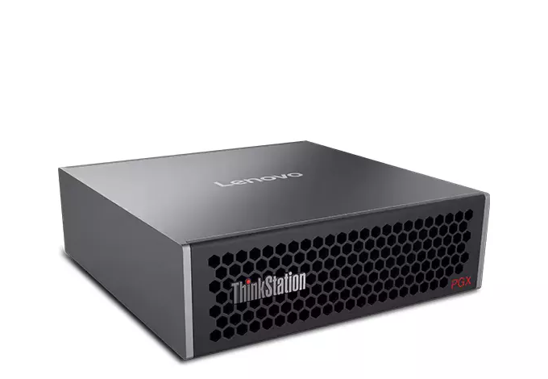
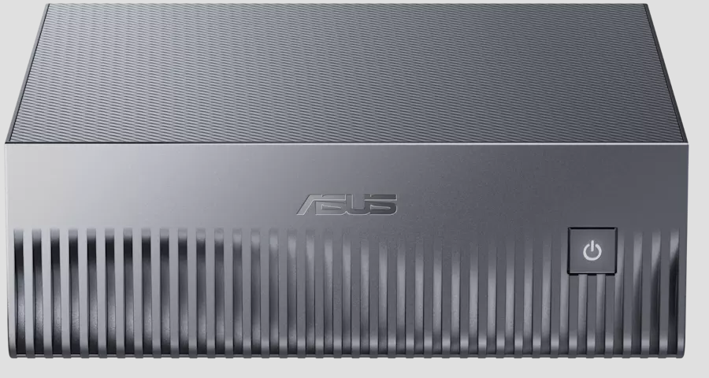

- 調査の条件と対象
- 機種一覧とOS
- 価格
- メモリ帯域と生成速度
- 対象モデルの量子化サイズ
- 容量別に動くモデルの判定
- MoEとQATが効く理由
- 手元の環境PCとの距離
- 統合メモリを持たない選択肢
- これから出る機種
- 結論
- 参照元
調査の条件と対象
ローカルで大規模言語モデルを動かすためのマシンを選ぶ、という目的で機種を並べます。載せるのは、その時点で実際に注文できたものだけです。カタログに存在しても購入画面で選べない構成は、比較の対象になりません。
対象を絞った条件
| 条件 | 内容 | 絞った理由 |
|---|---|---|
| 統合メモリ | 64GB / 128GB / 256GB | この3段で動かせるモデルの階層が変わる |
| ストレージ | 2TB / 4TB / 8TB | 量子化モデルは1本で数十〜数百GBあり、必要量で価格が変わる |
| 形態 | 据置型とノート型の両方 | 128GB はノート型でも積めるため、可搬性も選択肢に入る |
| LLM | Qwen / Gemma / GLM / Kimi | いずれも重みが公開され、GGUF が配布されている |
| 価格 | メーカー直販・正規販売店・通販の掲載価格 | 在庫があって注文できるものに限る |
載せなかったもの
| 対象 | 理由 |
|---|---|
| 統合メモリ 512GB | 選べない Mac Studio の仕様ページには記載があるが、購入画面のメモリ選択肢は 96GB と 256GB の2つだけ。注文する導線が無い |
| Lenovo ThinkStation PGX （正規流通分） | 在庫なし 国内の正規販売店はいずれも在庫切れで、次回入荷が未定。通販の第三者出品のみ購入可 |
| 終了したセールの価格 | 期限切れ 期間が過ぎたセールの金額は、いま払える額ではない |
価格と在庫は取得した時点のものです。本レポートの価格はすべて 2026-09-22 に確認しました。キャンペーンは入れ替わり、在庫は日々動きます。実際に購入するときは、各ページで必ず最新の状態を確認してください。とくに GB10 搭載機は、2日前の調査から最安機種が入れ替わっています。
機種一覧とOS
統合メモリを大量に積める機種は、大きく3系統に分かれます。OS がそのまま使えるソフトウェア資産を決めるため、価格と並ぶ選定軸になります。
NVIDIA GB10 搭載機

GB10 搭載機は NVIDIA DGX Spark のリファレンス設計をそのまま採用した OEM 機です。SoC・メモリ容量・帯域・本体サイズまで各社で一致するため、比較は性能ではなく調達条件の比較になります。
| 項目 | 全機種で共通の値 |
|---|---|
| SoC | NVIDIA GB10 Grace Blackwell Superchip |
| CPU | Arm 20コア（Cortex-X925 ×10 + Cortex-A725 ×10） |
| 統合メモリ | 128GB LPDDR5x・256bit・273 GB/sオンボード・増設不可 |
| AI性能 | 1 PFLOPS（FP4）／1,000 TOPS |
| ネットワーク | NVIDIA ConnectX-7（200GbE・2台連結用）、10GbE RJ45、Wi-Fi 7、Bluetooth 5.4 |
| 電源 | 240W USB TypeC アダプター（89% 変換効率） |
| 本体サイズ | 150 × 150 × 約 51 mm |
| OS | NVIDIA DGX OS（Ubuntu Linux Pro ベース）。CUDA と NVIDIA AI ソフトウェアスタックがプリロード済み |
| 付属品 | キーボードなし マウスなし モニターも別途必要 |
Apple Mac
| 写真 | 機種 | 形態 | 統合メモリ | 帯域 | ストレージ | OS |
|---|---|---|---|---|---|---|
 | Mac mini M5 Pro | 据置 | 24 / 48 / 64GB | 307 GB/s | 512GB〜8TB | macOS |
 | Mac Studio M5 Max | 据置 | 48 / 64 / 128GB | 614 GB/s | 512GB〜8TB | macOS |
 | Mac Studio M5 Ultra | 据置 | 96 / 256GB | 1.2 TB/s | 1TB〜16TB | macOS |
 | MacBook Pro 16インチ M5 Max | ノート | 48 / 64 / 128GB | 614 GB/s | 2TB〜8TB | macOS |
メモリ容量は CPU/GPU のコア構成に固定されています。128GB を選ぶには 40コアGPU の M5 Max、256GB を選ぶには 80コアGPU の M5 Ultra が必要です。
OS の違いは、そのまま移植コストになります。GB10 側は DGX OS で CUDA がそのまま動くため、既存の CUDA 資産を持ち込めます。Mac 側は Metal と MLX で、CUDA 前提のコードは書き換えが要ります。逆に Mac は汎用機として日常利用も兼ねられます。どちらが有利かは、いま何を持っているかで決まります。
在庫と入手先
2026-09-22 時点で確認した状態です。
| 機種 | 入手先 | 在庫・納期 |
|---|---|---|
| HP ZGX Nano G1n | HP 直販 | 受付中 期間限定キャンペーン（9/30 まで） |
| MSI EdgeXpert | Amazon | 販売中 |
| GIGABYTE AI TOP ATOM | ソフマップ ビックカメラ.com | 販売中 |
| Acer Veriton GN100 | Acer 公式ストア | 在庫あり 送料無料・発送まで通常3〜5営業日。セール価格は 9/25 まで |
| NVIDIA DGX Spark | Amazon | 販売中 最安だった出品は消えた |
| Dell Pro Max with GB10 | Dell 直販 | 受注可 受注後 10日〜2週間で納品。カートに追加できる状態 |
| ASUS Ascent GX10 | Amazon | 販売中 ただし 1TB 構成のみ |
| Lenovo ThinkStation PGX | 正規販売店 | 在庫なし 次回入荷未定。通販の第三者出品のみ購入可 |
| Apple 各機種 | Apple 公式ストア | 在庫あり 全構成で「最短で翌日に無料でお届け」 |
Amazon 掲載分は出品者と保証条件を個別に確認してください。本レポートは「注文できるか」で載せる・載せないを決めており、販路の質までは揃えていません。メーカー保証が国内で受けられるか、並行輸入でないかは、購入前に販売ページで確かめる必要があります。
価格
すべて税込・2026-09-22 時点です。Apple は購入画面で構成を選択して取得した金額で、カタログの「〜円から」ではありません。
統合メモリ × ストレージの一覧
| 統合メモリ | 機種 | 2TB | 4TB | 8TB |
|---|---|---|---|---|
| 64GB | Mac mini M5 Pro | 659,800 円 | 839,800 円 | 1,199,800 円 |
| 128GB | HP ZGX Nano G1n | — | 1,098,900 円 | — |
| 128GB | Mac Studio M5 Max | 1,031,800 円 | 1,211,800 円 | 1,571,800 円 |
| 128GB | MacBook Pro 16インチ M5 Max | 1,209,800 円 | 1,389,800 円 | 1,749,800 円 |
| 256GB | Mac Studio M5 Ultra | 1,993,800 円 | 2,173,800 円 | 2,533,800 円 |
GB10 搭載機にストレージの選択肢はありません。直販で買えるのは 4TB 構成の1点だけで、2TB にも 8TB にもできません。8TB の段は Apple だけの比較になります。
4TB で揃えた GB10 搭載機
GB10 搭載機は性能が同一なので、価格と保証だけの比較になります。安い順です。
| 写真 | 製品 | 価格（税込） | 最安との差 | 入手先 | 保証・注記 |
|---|---|---|---|---|---|
| HP ZGX Nano G1n | 1,098,900 円 定価 2,125,200 円 |
基準 | HP 直販 | メーカー直販 1年センドバック。期間限定 9/30 まで | |
| MSI EdgeXpert | 1,110,659 円 | +11,759 円 | Amazon | 要確認 出品者・保証条件は個別確認 | |
 |
GIGABYTE AI TOP ATOM | 1,366,800 円 | +267,900 円 | ソフマップ ビックカメラ.com |
型番 ATAGB10-9001 |
 |
Acer Veriton GN100 | 1,386,000 円 通常 1,999,800 円 |
+287,100 円 | Acer 公式ストア | 在庫あり セール価格は 9/25 まで |
 |
NVIDIA DGX Spark | 1,821,521 円 | +722,621 円 | Amazon | リファレンスそのもの。ソフトウェア情報が最も見つけやすい。要確認 2日前まで最安だったが、その出品が消えた |
 |
Dell Pro Max with GB10 | 2,140,820 円 配送料込 |
+1,041,920 円 | Dell 直販 | オンサイト保守 12ヶ月。受注後 10日〜2週間で納品 |
 |
Lenovo ThinkStation PGX | 2,176,790 円 | +1,077,890 円 | 通販（第三者出品） | 正規流通は在庫なし |
同じ性能のものが、入手先だけで108万円違います。最安の HP と最高値の Lenovo で動作性能は変わりません。差額は保証・流通経路・在庫状況への対価です。2位との差は約1.2万円しかありませんが、片方はメーカー直販、もう片方は通販の掲載価格です。金額だけで決める幅ではありません。
ストレージ容量が揃わないもの
ASUS Ascent GX10 は統合メモリこそ 128GB ですが、流通している構成はストレージ 1TB です。同一構成で比べられないため、上の表からは外しました。
| 写真 | 製品 | メモリ | ストレージ | 価格（税込） | 入手先 |
|---|---|---|---|---|---|
 | ASUS Ascent GX10 GX10-GG0003BN | 128GB | 1TB | 1,587,815 円 | Amazon |
容量が4分の1で、価格は 4TB 機より高くなっています。統合メモリだけを見て「128GB 機の最安」と判断すると外します。GB10 搭載機を比べるときは、ストレージ容量を必ず型番で確かめてください。
統合メモリ 1GB あたりの単価
| 機種 | メモリ | 2TB 時 | 4TB 時 | 8TB 時 |
|---|---|---|---|---|
| Mac mini M5 Pro | 64GB | 10,309 円/GB | 13,122 円/GB | 18,747 円/GB |
| HP ZGX Nano G1n | 128GB | — | 8,585 円/GB | — |
| Mac Studio M5 Max | 128GB | 8,061 円/GB | 9,467 円/GB | 12,280 円/GB |
| MacBook Pro 16インチ M5 Max | 128GB | 9,452 円/GB | 10,858 円/GB | 13,670 円/GB |
| Mac Studio M5 Ultra | 256GB | 7,788 円/GB | 8,491 円/GB | 9,898 円/GB |
容量あたりで最も安いのは 256GB の Mac Studio M5 Ultra です。総額は最も高いものの、1GB あたりでは全段で最安になります。大きく積むほど単価は下がります。逆に 64GB の Mac mini は、8TB まで積むと 1GB あたり 18,747 円になり、最も割高な買い方になります。
メモリ帯域 1GB/s あたりの単価
| 機種 | 帯域 | 2TB 時 | 4TB 時 | 8TB 時 |
|---|---|---|---|---|
| Mac mini M5 Pro | 307 GB/s | 2,149 円 | 2,735 円 | 3,908 円 |
| HP ZGX Nano G1n | 273 GB/s | — | 4,025 円 | — |
| Mac Studio M5 Max | 614 GB/s | 1,681 円 | 1,974 円 | 2,560 円 |
| MacBook Pro 16インチ M5 Max | 614 GB/s | 1,971 円 | 2,263 円 | 2,850 円 |
| Mac Studio M5 Ultra | 1.2 TB/s | 1,662 円 | 1,812 円 | 2,112 円 |
帯域あたりでは GB10 搭載機が最も高くつきます。GB10 の強みは 128GB を 110万円未満で積めることにあり、速度あたりの効率ではありません。
メモリ帯域と生成速度
生成（decode）の速さは、演算性能ではなくメモリ帯域で決まります。1トークンを出すたびに重みを読み直すため、読み出しの速さが上限になります。
MoE では「活性パラメータ」だけを読む
Mixture of Experts（MoE）のモデルは、総パラメータのうち一部の専門家（expert）だけを1トークンごとに使います。容量は総パラメータで決まり、速度は活性パラメータで決まります。この分離があるため、総パラメータが 1000億を超えるモデルでも、活性が数十億なら実用的な速度で回ります。
実測を基準にした見当
前世代の M4 Max・128GB で 200B 級 MoE（3bit・約 90GB）が 9〜10 tok/s という実測が公開されています。デコード速度は帯域に律速されるため、この実測を基準に各機種の見当が付きます。
| 機種 | メモリ帯域 | M4 Max 比 | 90GB のモデルでの速度 |
|---|---|---|---|
| MacBook Pro M4 Max 128GB（前世代） | 546 GB/s | 基準 | 9〜10 tok/s（実測） |
| Mac Studio M5 Ultra 256GB | 1.2 TB/s | 2.20× | 約 20 tok/s（推定） |
| Mac Studio M5 Max 128GB | 614 GB/s | 1.12× | 約 10〜11 tok/s（推定） |
| MacBook Pro 16インチ M5 Max 128GB | 614 GB/s | 1.12× | 約 10〜11 tok/s（推定） |
| Mac mini M5 Pro 64GB | 307 GB/s | 0.56× | — 64GB 上限で載らない |
| GB10 搭載機 128GB | 273 GB/s | 0.50× | 約 4.5〜5 tok/s（推定） |
同じ 128GB でも、生成速度は 2.25 倍違います。GB10 搭載機と Mac Studio M5 Max は載せられるモデルが同じですが、帯域比がそのまま速度差になります。128GB を選ぶ判断は、容量ではなく帯域と価格の比較です。
KV キャッシュがメモリを追加で食う
モデル本体のほかに、文脈を保持する KV キャッシュがメモリを消費します。モデルの大きさに対しては小さいものの、容量ぎりぎりの構成では効きます。次章以降の判定では、OS と合わせた余裕をあらかじめ差し引いています。
対象モデルの量子化サイズ
Qwen・Gemma・GLM・Kimi の各系列について、公開されている GGUF の実サイズを並べます。数値は配布元が示すファイルサイズです。
Qwen
| モデル | 総 / 活性 | 形式 | 4bit 級サイズ | 小さい量子化 |
|---|---|---|---|---|
| Qwen3.8-27B | 27B（dense） | dense | 約 17 GB | — |
| Qwen3.6-35B-A3B | 35B / 3B | MoE | 22.7 GB | 2bit 12.6 GB |
| Qwen3.8-Flash-Next | 125B / 6B | MoE | 93.7 GB | 1bit 72.5 GB 2bit 78.9 GB 3bit 90 GB |
| Qwen3-235B-A22B | 235B / 22B | MoE | 142 GB | 3bit 約 112 GB |
| Qwen3.8-Max | 2.4T / 95B | MoE | — | FP8 で約 2.5 TB |
Gemma
Gemma 4 は全変種に QAT（Quantization Aware Training）のチェックポイントが用意されています。学習の段階で量子化を織り込むため、4bit でも精度の低下が小さいのが特徴です。
| モデル | 総 / 活性 | 形式 | BF16 | QAT 4bit |
|---|---|---|---|---|
| Gemma 4 E2B | 2B | dense | 11.4 GB | 2.9 GB |
| Gemma 4 E4B | 4B | dense | 17.9 GB | 4.5 GB |
| Gemma 4 12B | 12B | dense | 26.7 GB | 6.7 GB |
| Gemma 4 26B-A4B | 26B / 4B | MoE | 57.7 GB | 14.4 GB |
| Gemma 4 31B | 31B | dense | 69.9 GB | 17.5 GB |
Gemma 4 の GGUF は 4bit 相当が1本だけ配布されています。配布元によれば、それより高い精度の量子化は精度が上がらず劣化するため用意していないとのことです。選択の余地がない代わりに、迷う必要もありません。
GLM
| モデル | 総 / 活性 | 1bit | 2bit | 3bit | 4bit |
|---|---|---|---|---|---|
| GLM-4.6 | 355B / 32B | 84 GB | 115〜135 GB | 145〜158 GB | 204 GB |
| GLM-5 | 744B / 40B | 176 GB | 241 GB | — | — |
| GLM-5.2 | 744B / 40B | 223 GB | 239 GB | 290〜360 GB | 372〜475 GB |
Kimi
| モデル | 総 / 活性 | 最小の量子化 | 2bit | 4bit |
|---|---|---|---|---|
| Kimi K2（初代） | 1T / 32B | 1.8bit 230〜244 GB | 382 GB | 621 GB |
| Kimi K2.6 | 1T | — | 340 GB | 584 GB |
| Kimi K2.7 Code | 1T / 32B | — | 339 GB | 584 GB |
Kimi は現行世代で 1bit 級の配布がなくなりました。初代 K2 には 1.8bit（230〜244GB）がありましたが、K2.6 と K2.7 は 2bit（339〜340GB）が最小です。256GB の機体でも現行世代は入りません。
容量別に動くモデルの判定
実効容量の見方
統合メモリの全量をモデルに使えるわけではありません。OS と他のプロセス、それに KV キャッシュを差し引いた分が使える上限になります。ここでは次の目安で判定します。
| 統合メモリ | OS等の控え | KV等の控え | モデルに使える目安 |
|---|---|---|---|
| 64GB | 8 GB | 6 GB | 約 50 GB |
| 128GB | 10 GB | 8 GB | 約 110 GB |
| 256GB | 12 GB | 10 GB | 約 234 GB |
Mac は既定でGPUに割り当てる上限が全量より低く設定されています。大きなモデルを載せるときは割り当て上限を引き上げる設定が要ります。上表はその調整を行った前提の数値です。調整しない場合、使える量はさらに小さくなります。
以下の表の「推定速度」は、4章の実測（M4 Max・546 GB/s・90GB のモデルで 9〜10 tok/s）を基準に、帯域比とモデルサイズ比だけで機械的に外挿した値です。MoE モデルは総パラメータの一部（活性パラメータ）しか読まないため、活性比率が低いモデル（例: Qwen3.8-Flash-Next は 125B 中 6B）ほど、この推定より実際は速くなる可能性があります。実測ではなく目安として扱ってください。
64GB（Mac mini M5 Pro）で動くもの
機種が Mac mini M5 Pro（307 GB/s）に限定されるため、推定速度もこの帯域で計算しています。
| 判定 | モデル | 量子化 | サイズ | 推定速度 |
|---|---|---|---|---|
| 動く | Gemma 4 31B | QAT 4bit | 17.5 GB | 約 27 tok/s |
| 動く | Gemma 4 26B-A4B | QAT 4bit | 14.4 GB | 約 33 tok/s |
| 動く | Qwen3.6-35B-A3B | 4bit | 22.7 GB | 約 21 tok/s |
| 動く | Qwen3.8-27B | 4bit | 約 17 GB | 約 28 tok/s |
| 条件付き | Gemma 4 31B | BF16（無量子化） | 69.9 GB | 約 7 tok/s |
| 載らない | Qwen3.8-Flash-Next | 1bit でも | 72.5 GB | — |
| 載らない | GLM-4.6 以上 | 1bit でも | 84 GB 以上 | — |
64GB の上限は、総パラメータで 35B 前後、モデルサイズで 50GB 程度です。4bit なら 100B 級の MoE に手が届きそうに見えますが、実際には Qwen3.8-Flash-Next（125B）の最小量子化 72.5GB でも入りません。
128GB（GB10 搭載機 / Mac Studio M5 Max / MacBook Pro M5 Max）で動くもの
この容量は3機種にまたがり、帯域も 273〜614 GB/s とばらつくため機種を1つに絞れません。推定速度は Mac Studio M5 Ultra 256GB（1.2 TB/s）の値を代わりに載せています。GB10 搭載機・Mac Studio M5 Max・MacBook Pro M5 Max では、この値より遅くなります。
| 判定 | モデル | 量子化 | サイズ | 推定速度 （M5 Ultra 256GB） |
|---|---|---|---|---|
| 動く | Qwen3.8-Flash-Next | 4bit (IQ4_XS) | 93.7 GB | 約 20 tok/s |
| 動く | GLM-4.6 | 2bit (IQ2_XXS) | 115 GB | 約 16 tok/s |
| 動く | Qwen3-235B-A22B | 3bit | 約 112 GB | 約 17 tok/s |
| 条件付き | GLM-4.6 | 2bit (Q2_K_XL) | 135 GB | 約 14 tok/s |
| 載らない | Qwen3-235B-A22B | 4bit | 142 GB | — |
| 載らない | GLM-5 / GLM-5.2 | 1bit でも | 176 GB 以上 | — |
| 載らない | Kimi K2 系 | 最小でも | 230 GB 以上 | — |
128GB の上限は、総パラメータで 235B〜355B、モデルサイズで 110GB 程度です。ただし 235B・355B を載せるには 2〜3bit まで落とす必要があり、4bit で快適に使えるのは 125B 級までです。
128GB は「4bit で 125B 級」か「2bit で 355B 級」の分かれ道になります。同じ容量でも、量子化を深めて大きいモデルを載せるか、精度を保って中規模を載せるかで性格が変わります。品質を優先するなら 4bit の 125B 級のほうが安定します。
256GB（Mac Studio M5 Ultra）で動くもの
機種が Mac Studio M5 Ultra（1.2 TB/s）に限定されるため、推定速度もこの帯域で計算しています。
| 判定 | モデル | 量子化 | サイズ | 推定速度 |
|---|---|---|---|---|
| 動く | Qwen3-235B-A22B | 4bit (Q4_K_M) | 142 GB | 約 13 tok/s |
| 動く | GLM-4.6 | 4bit (Q4_K_XL) | 204 GB | 約 9.2 tok/s |
| 動く | GLM-5 | 2bit (IQ2_XXS) | 241 GB | 約 7.8 tok/s |
| 動く | GLM-5.2 | 2bit (IQ2_M) | 239 GB | 約 7.9 tok/s |
| 条件付き | Kimi K2（初代） | 1.8bit | 230〜244 GB | 約 7.7〜8.2 tok/s |
| 載らない | Kimi K2.6 / K2.7 | 2bit が最小 | 339〜340 GB | — |
| 載らない | Qwen3.8-Max | — | 約 2.5 TB | — |
256GB の上限は、総パラメータで 744B、モデルサイズで 234GB 程度です。1兆パラメータ級（Kimi K2 系）は、初代の 1.8bit がぎりぎり入るかどうかで、現行世代は入りません。
3段のまとめ
| 統合メモリ | 該当機種 | モデルに使える目安 | 4bit で動く総パラメータ | 低ビットまで落として動く総パラメータ |
|---|---|---|---|---|
| 64GB | Mac mini M5 Pro | 約 50 GB | 35B 級 | 35B 級（変わらず） |
| 128GB | GB10 搭載機 Mac Studio M5 Max MacBook Pro M5 Max | 約 110 GB | 125B 級 | 355B 級（2bit） |
| 256GB | Mac Studio M5 Ultra | 約 234 GB | 355B 級 | 744B 級（2bit） |
容量を2倍にすると、動かせる総パラメータはおよそ3倍に伸びます。64GB→128GB で 35B→125B、128GB→256GB で 125B→355B（いずれも 4bit）です。低ビットまで許容すればさらに一段上がります。この非線形さは、大きいモデルほど MoE で活性が抑えられており、低ビット量子化の劣化も相対的に小さいことによります。
MoEとQATが効く理由
MoE は容量と速度を切り離す
dense（密）モデルは、1トークンごとに全パラメータを読みます。MoE は専門家を切り替えて一部だけを使うため、読む量が総パラメータより大幅に小さくなります。
| モデル | 形式 | 総 | 活性 | 活性の割合 |
|---|---|---|---|---|
| Gemma 4 31B | dense | 31B | 31B | 100% |
| Qwen3.6-35B-A3B | MoE | 35B | 3B | 8.6% |
| Qwen3.8-Flash-Next | MoE | 125B | 6B | 4.8% |
| Qwen3-235B-A22B | MoE | 235B | 22B | 9.4% |
| GLM-5.2 | MoE | 744B | 40B | 5.4% |
| Kimi K2.7 | MoE | 1000B | 32B | 3.2% |
活性の割合は、モデルが大きくなるほど小さくなる傾向にあります。1兆パラメータの Kimi K2.7 でも活性は 32B で、Gemma 4 31B の dense と同程度です。載せられれば、速度は総パラメータほど不利にならないということです。
MoE で節約できるのは読み出し量だけで、置き場所は節約できません。どの専門家が呼ばれるかは入力ごとに変わるため、全パラメータをメモリに置いておく必要があります。統合メモリの容量が壁になるのはこのためです。
QAT は量子化の劣化を先に織り込む
通常の量子化は、学習が終わった重みを後から丸めます。QAT は学習の過程に量子化を混ぜ込むため、4bit にしても品質の落ち込みが小さくなります。Gemma 4 は全変種に QAT を用意しており、4bit で BF16 の約4分の1（メモリ使用量で約72%減）に収まります。
手元の環境PCとの距離
比較の出発点として、いま使っている一般的なゲーミングノートがどこに位置するかを示します。決定的な制約は VRAM です。
| 比較軸 | ゲーミングノート（2021年前後の構成） | 128GB 機（GB10 搭載機） | 差 |
|---|---|---|---|
| AI に使えるメモリ | 4 GB（VRAM） | 128 GB（統合） | 32倍差 |
| メモリ帯域 | 約 51.2 GB/s （DDR4-3200 2ch） | 273 GB/s （LPDDR5x 256bit） | 約 5.3倍 |
| システムメモリ | 32 GB 16GB×2・スロット2本とも使用済み | 128 GB（オンボード・増設不可） | — |
| CPU | 4コア8スレッド | Arm 20コア | 5倍 |
| ストレージ | 1 TB | 4 TB | 4倍 |
| 扱えるモデル規模 | 2B 級以下（量子化なし） 7B 級（4bit） | 55B 級（量子化なし） 125B 級（4bit、総パラメータ 355B まで） | — |
| OS | Windows 11 | NVIDIA DGX OS | — |
VRAM 4GB は、アップグレードでは越えられない壁です。システムメモリは 32GB へ増設済みですが、VRAM は 4GB のまま変わりません。CPU も BGA 実装で交換できません。システムメモリへオフロードすれば大きいモデルも一応動きますが、帯域が 51.2 GB/s しかないため実用的な速度になりません。増設で改善するのは同時に扱えるプロセスの数であって、載せられるモデルの大きさではありません。
CPU・GPU の型番、ストレージ・ネットワーク・電源の構成、仮想化の状態など、さらに詳しい実測は実行環境PC スペック調査を参照してください。
統合メモリを持たない選択肢
統合メモリ機ではなく、ディスクリート GPU を積んだ一般的な PC を選ぶ道もあります。ただし VRAM の上限が低く、本レポートの3段のいずれにも届きません。構造的な理由を残しておきます。
NPU の TOPS 値は判断材料にならない
AI PC として売られる機種は「最大 45 TOPS」「最大 85 TOPS NPU」といった数値を前面に出しますが、これは LLM の生成速度を意味しません。生成はメモリ帯域に律速されるため、演算性能の指標を見ても速度は分かりません。NPU は小さなモデルの推論や画像処理の加速に効くもので、大きな LLM を載せる能力とは別の話です。
デスクトップの VRAM 上限はノートより低いことがある
価格の高さと VRAM 容量は一致しません。デスクトップの最上位モデルでも VRAM 16GB に留まる一方、ノート型では 24GB の構成が存在します。
| 形態 | VRAM 最大 | 該当する GPU |
|---|---|---|
| デスクトップ | 16GB | RTX 5080 クラス |
| ノート | 24GB | RTX 5090 Laptop |
つまり VRAM 24GB を求めるならノート型しか選択肢がないという逆転が起きます。価格順に選ぶと外します。
メモリスロットを使い切っている構成がある
安価な構成では、システムメモリが 8GB×2 でスロットを使い切っていることがあります。32GB にするには増設ではなく交換が必要です。VRAM に収まらない分をシステムメモリへオフロードする使い方では、この容量が次のボトルネックになるため、交換用メモリの費用を初期コストに含めて見積もる必要があります。
Radeon 構成は安いが不利
同じ VRAM 16GB でも、Radeon 構成のほうが数万円安く手に入ります。ただし Windows での ROCm 対応が限定的で、llama.cpp は Vulkan バックエンド頼りになります。差額で CUDA が使えるかどうかが変わるため、LLM 用途では GeForce を選ぶ価値があります。
VRAM 24GB では、本レポートで扱ったモデルはほとんど動きません。4bit の 35B 級（22.7GB）がぎりぎり載るかどうかで、125B 級には遠く届きません。統合メモリ機を検討する理由は、ここにあります。
これから出る機種
購入できないため比較表には入れていませんが、容量の段そのものを変える機種が出ます。
GMKtec EVO-X5 Pro
| 項目 | 内容 |
|---|---|
| CPU | AMD Ryzen AI Max+ PRO 495（Zen 5・16コア32スレッド） |
| GPU | Radeon 8065S（RDNA 3.5・40 CU） |
| NPU | AMD XDNA 2（55 TOPS） |
| 統合メモリ | 最大 192GB LPDDR5X-8533（256bit） |
| メモリ帯域 | 273 GB/s |
| GPU 割り当て | 最大 160GB |
| ストレージ | 最大 24TB（PCIe 4.0 M.2 2280 × 3基） |
| 発売日 | 2026年9月28日 |
| 価格 | 未公開 日本公式サイトに製品ページはあるが、価格も購入導線も未掲載 |
帯域は GB10 搭載機と同じ 273 GB/s で、容量だけが 128GB から 192GB へ伸びます。両者は 256bit の LPDDR5X という同じ構成で、速度はほぼ並びます。128GB では載らなかった GLM-5 の 1bit（176GB）が、192GB なら入る計算になります。ただし実効容量は OS の控えを引いた分になるため、余裕はほとんど残りません。
価格が公開されていないため、費用対効果は判断できません。128GB 機と 256GB 機の中間をいくら埋めるかが、この機種が選択肢になるかどうかを決めます。
結論
容量の3段が、そのまま使えるモデルの階層になる
統合メモリの容量は、動かせるモデルの上限をほぼ一意に決めます。帯域と価格はその次の判断軸です。
用途で選ぶなら
| 優先すること | 選ぶもの | 価格（税込） | 理由 |
|---|---|---|---|
| 最も安く 128GB / 4TB | HP ZGX Nano G1n 128GB / 4TB |
1,098,900 円 | 4TB 込みで最安。しかもメーカー直販で 1年センドバックが付く。キャンペーン価格で 9/30 まで |
| 128GB で速さが要る | Mac Studio M5 Max 128GB / 2TB |
1,031,800 円 | GB10 機のどれより安く、帯域は 2.25 倍。ストレージは 2TB に下がる。4TB が要らないならこちらが有利 |
| 最大規模を狙う | Mac Studio M5 Ultra 256GB / 2TB |
1,993,800 円 | 744B 級が 2bit で載る唯一の選択。帯域も 1.2TB/s で最速。容量単価でも最安 |
| 予算を最小に | Mac mini M5 Pro 64GB / 2TB |
659,800 円 | 35B 級までなら十分。ただし 100B 級には届かない |
| 持ち運びたい | MacBook Pro 16インチ M5 Max 128GB / 2TB |
1,209,800 円 | 128GB をノート型で扱える唯一の選択肢。据置の M5 Max との差額 17.8 万円が可搬性の対価 |
| CUDA 資産がある | GB10 搭載機 128GB / 4TB |
1,098,900 円〜 | DGX OS で CUDA がそのまま動く。Mac へ移すなら MLX への移植コストが上乗せされる |
128GB は帯域と価格で決まる
GB10 搭載機（273 GB/s）と Mac Studio M5 Max（614 GB/s）は、統合メモリが同じ 128GB です。載せられるモデルは同じですが、生成速度は帯域比で 2.25 倍の差が出ます。2TB で足りるなら Mac Studio が安く速く、4TB が要るなら GB10 側が安いという関係です。
通販の掲載価格は、数日で往復します。DGX Spark は9月20日に18万円下がって最安に立ちましたが、その2日後には最安の出品が消え、73万円高い値だけが残りました。首位に立ってから陥落するまで2日です。同じ期間に Dell は23万円上がり、ASUS は容量が4分の1（1TB）だと判明しています。一方 Apple の価格は、9月5日・16日・20日・22日の4時点で一度も動いていません。メーカー直販（HP・Dell）も据え置きでした。動くのは通販の掲載価格だけです。この表の順位は数日で変わる前提で読んでください。
256GB は容量と帯域が同時に上がる
Mac Studio M5 Ultra は、容量が 2 倍になると同時に帯域も 1.2TB/s へ上がります。総額は最も高いものの、容量単価でも帯域単価でも最も効率がよいという結果になりました。動かしたいモデルが 355B 級に及ぶなら、これ以外の選択肢は現時点でありません。
参照元
本レポートの数値はすべて以下から取得しました。取得日はいずれも 2026-09-22 です（記載のあるものを除く）。
メーカー公式・直販
- HP ZGX Nano G1n キャンペーン（価格・期間）
https://jp.ext.hp.com/campaign/business/workstations/zgx_campaigns/ - HP ZGX Nano AI Station スペック表（ConnectX-7 の帯域、電源方式、同梱品の有無）
https://jp.ext.hp.com/prod/workstations/zgx_nano_ai_station/bto/ - HP ZGX Nano G1n AI Station 製品詳細
https://jp.ext.hp.com/workstations/zgx_nano_ai_station/ - Dell Pro Max with GB10（構成・価格・納期・保証）
https://www.dell.com/ja-jp/shop/dell-pro-max-with-gb10/spd/dell-pro-max-fcm1253-micro - Acer Veriton GN100（価格・在庫・発送日数）
https://store.acer.com/ja-jp/acer-gn100 - AMD Ryzen AI Max+ PRO 495（メモリ帯域・コア構成・NPU）
https://www.amd.com/ja/products/processors/laptop/ryzen-pro/ai-max-pro-400-series/amd-ryzen-ai-max-plus-pro-495.html - GMKtec EVO-X5 Pro 日本公式（製品ページ。価格は未掲載）
https://jp.gmktec.com/products/gmktec-evo-x5-pro-amd-ryzen%E2%84%A2ai-max-pro-495-%E3%83%9F%E3%83%8Bpc
Apple 公式ストア
構成を購入画面で実際に選択し、選択後の合計金額を読み取っています。カタログ値ではありません。
- Mac mini（M5 Pro 64GB の 2TB / 4TB / 8TB）
https://www.apple.com/jp/shop/buy-mac/mac-mini - Mac Studio（M5 Max 128GB・M5 Ultra 256GB の 2TB / 4TB / 8TB、選べるメモリの一覧）
https://www.apple.com/jp/shop/buy-mac/mac-studio - MacBook Pro（16インチ M5 Max 128GB の 2TB / 4TB / 8TB）
https://www.apple.com/jp/shop/buy-mac/macbook-pro
販売店・通販
- 価格.com「GB10 Grace Blackwell」検索結果（ASUS・MSI・DGX Spark・GIGABYTE・Lenovo の掲載価格）
https://search.kakaku.com/GB10%20Grace%20Blackwell/ - パソコンSHOPアーク（Lenovo ThinkStation PGX の在庫・詳細スペック・OS 表記）
https://www.ark-pc.co.jp/i/31401277/ - ツクモ（Lenovo ThinkStation PGX の在庫）
https://shop.tsukumo.co.jp/goods/2030010090065/
報道
- PC Watch「300B級LLMが動くミニPC『EVO-X5 Pro』、9月28日発売」（2026年9月16日）
https://pc.watch.impress.co.jp/docs/news/2141237.html
モデルのサイズ・実測値
- 各モデルの GGUF 配布元が公開しているファイルサイズ（Qwen・Gemma・GLM・Kimi）
- 前世代 MacBook Pro M4 Max 128GB での 200B 級 MoE 実測（9〜10 tok/s・2026-08-28 公開）
価格と在庫は変動します。ここに挙げた URL は取得時点の状態を示すもので、内容は予告なく変わります。購入を検討するときは、必ず各ページで最新の情報を確認してください。